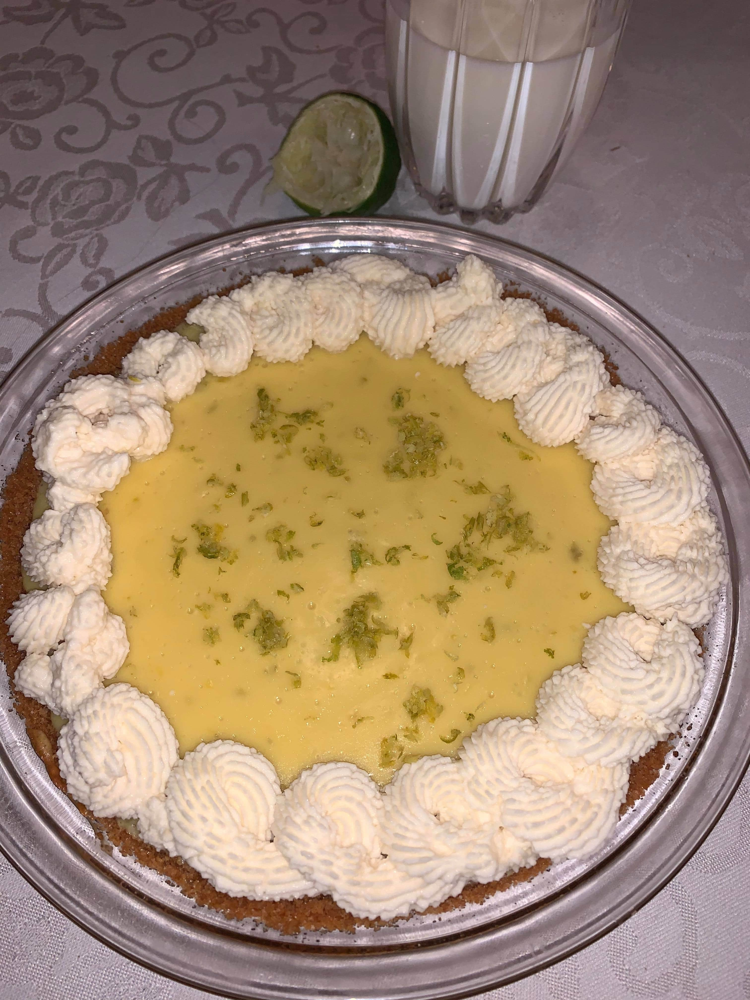

Info
Maryam made this for Father's Day and served it chilled for the perfect summer dessert.
Total Time
8 hours (includes cooling time)
Servings
12
Ingredients for the Crust
1 wax package
Graham Crackers
5 tbs
Butter (unsalted melted)
1/4 cups
Sugar
A pinch
Salt
Ingredients for the Filling
1 cun or 14 oz
Sweetened Condensed Milk
4
Egg Yolks (room temperature)
1/2 cup
Freshly squeezed lime juice (can be key limes or regular limes)
1 tsp
Lime Zest
Ingredients for the Whipped Cream
1/2 cup
Heavy Whipping Cream
3 tbs
Powdered Sugar
1/4 tsp
Vanilla Extract
Directions
Pre-heat oven to 350°, and combine all of the items for the crust in a food processor.
Mix until crumbly and well combined, then press it firmly into a glass pan and bake for 8 minutes.
For the filling, start by whipping the eggs and milk together. Then add in the lime juice and zest.
Pour the filling into the cooled crust and bake for 15 minutes.
Allow the pie to cool overnight before topping and serving.
For the whipped cream, beat all of the ingredients together until soft peaks begin to form.
Place the whipped cream into a piping bag or plastic bag to use to decorate the chilled pie. Garnish with zest and lime slice as well if desired.
Go to back to recipes.